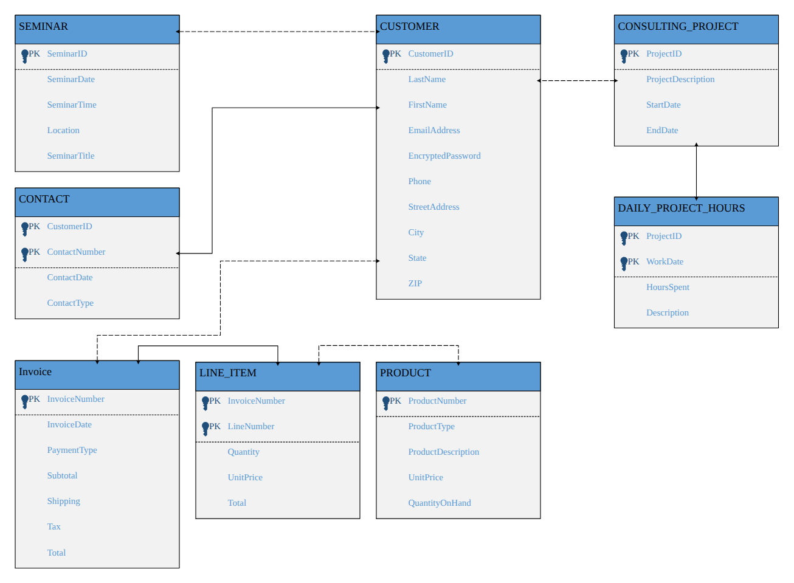
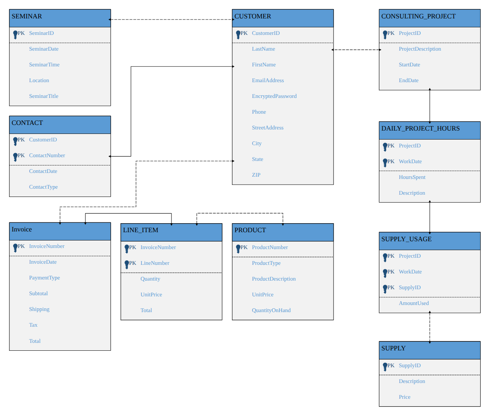

Week 5 · Submitted June 21
These two textbook exercises extend an existing data model for a business that runs seminars, tracks customer contacts, and sells products through invoices. Each exercise adds a new part of the business to the model, drawn as an entity relationship diagram in Visio with primary keys marked on each entity.
This exercise adds consulting work. CONSULTING_PROJECT belongs to a customer and has a description and start and end dates. Hours are logged per project per day in DAILY_PROJECT_HOURS, whose composite key (ProjectID, WorkDate) makes it a weak entity that depends on the project it belongs to.

Original file: Exercise-4-40.vsdx (Visio)
This exercise builds on 4.40 by tracking the supplies used on each day of project work. SUPPLY is a catalog of supplies with a description and price. SUPPLY_USAGE resolves the many-to-many relationship between a day of project hours and the supplies used that day. Its key is ProjectID, WorkDate, and SupplyID, and it records the AmountUsed.

Original file: Exercise-4-41.vsdx (Visio)
The images above were rendered from the Visio files, and the crow's-foot line endings show as plain arrows. The .vsdx originals have the full notation.